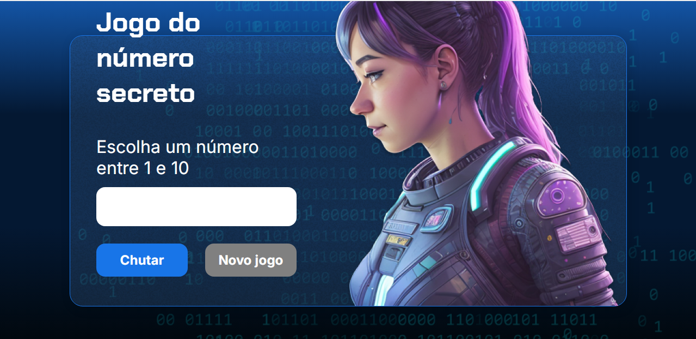
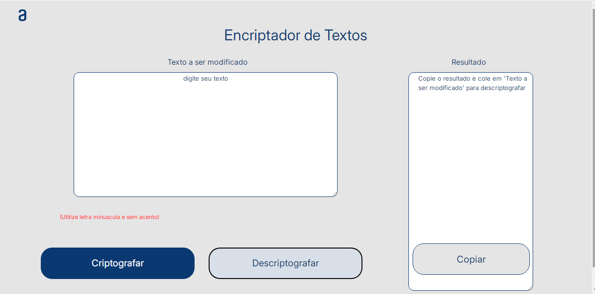
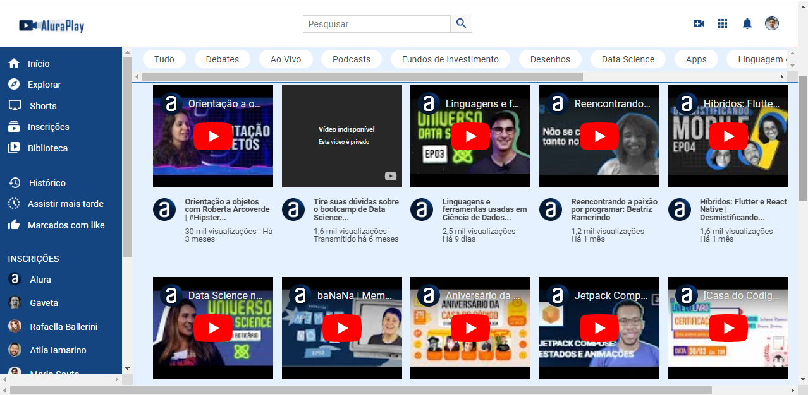
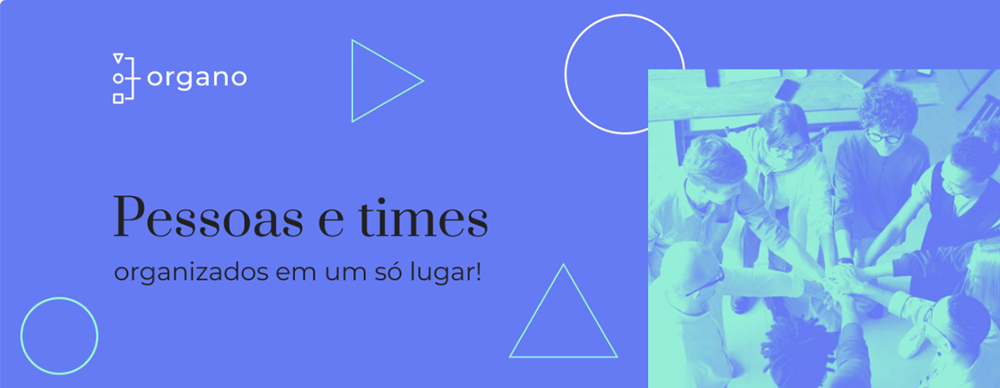
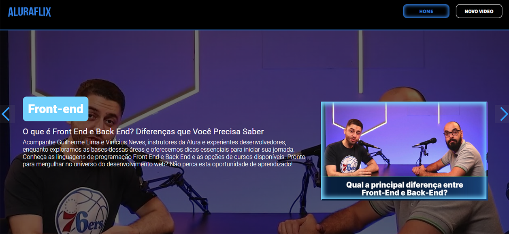

Projetos
-

Jogo do Número Secreto
Adivinhe o numero sorteado pela inteligência artificial.
Decodificador de Textos
Codifique ou descodifique textos de forma facil.
Alura Play
Este projeto simula uma plataforma de videos.

PHS-informatica
Este é um projeto inicial para divulgar a prestação de serviços.

Alura Geek
O Alura Geek, foi um desafio proposto pela Alura para por em pratica os conceitos aprendidos.
Organograma
Organo foi o primeiro projeto em React desenvolvido com ajuda da Alura
Alura-Flix
Alura-Flix foi 4º desafio proposto pela Alura para se tornar um desenvolvedor React.